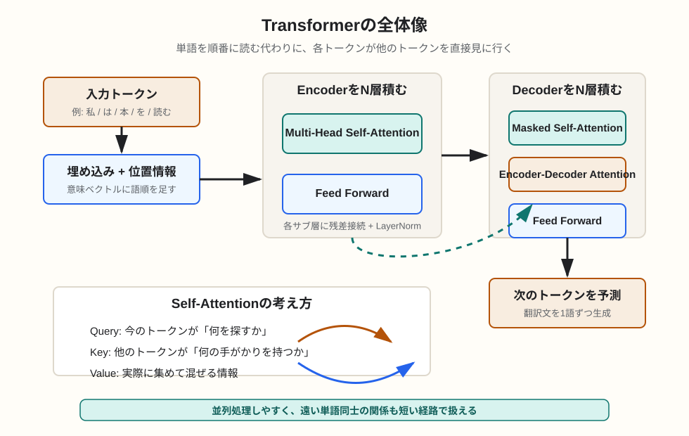

Transformer / 論文解説
トランスフォーマー論文を図解で理解する
2017年の論文「Attention Is All You Need」は、RNNやCNNを主役にせず、Attentionだけで系列変換を行うTransformerを提案しました。現在のLLMの基礎になる考え方を、機械翻訳モデルとしての原型から整理します。
簡潔なQ&A
- Q. トランスフォーマー論文は何がすごかったのか？
- A. 文を左から順番に処理するRNNを使わず、Self-Attentionで単語同士の関係を一度に計算できる構造を示した点です。これにより並列学習しやすく、長い文脈内の関係も扱いやすくなりました。
- Q. Attentionとは何か？
- A. あるトークンを理解するときに、文中のどのトークンをどれくらい参照するかを重み付けする仕組みです。「この単語の意味を決めるには、あの単語を強く見る」という計算を行います。
- Q. 現在のGPTやLLMと同じ構造なのか？
- A. 原論文は機械翻訳向けのEncoder-Decoder構成です。GPT系は主にDecoder側を使うDecoder-only構成、BERT系はEncoder側を使うEncoder-only構成として発展しました。

論文の問題意識
原論文の対象は、主に機械翻訳のような「入力系列を出力系列へ変換する」タスクです。従来はRNNやLSTMのように、単語を順番に読みながら状態を更新するモデルがよく使われていました。
しかし順番に読む構造は、長い文を扱うと遠い単語同士の関係が伝わりにくく、学習時にも並列化しにくいという弱点があります。Transformerは、この逐次処理を中心に置かず、Attentionでトークン同士を直接結ぶ設計に変えました。
Transformerの大きな構成
原論文のTransformerはEncoderとDecoderで構成されます。Encoderは入力文を読み、各トークンの文脈込み表現を作ります。Decoderはそれを参照しながら、出力文を1トークンずつ生成します。
| 部品 | 役割 | 直感的な見方 |
|---|---|---|
| Embedding | トークンを数値ベクトルに変換する。 | 単語を計算できる座標に置く。 |
| Positional Encoding | Attentionだけでは語順がわからないため、位置情報を足す。 | 「何番目の単語か」という手がかりを付箋として貼る。 |
| Self-Attention | 同じ文の中で、各トークンが他のトークンを参照する。 | 単語同士の関係線を引く。 |
| Feed Forward | 各位置の表現を非線形に変換する。 | 集めた文脈情報を、その位置ごとに加工する。 |
| Residual + LayerNorm | 深い層でも学習を安定させる。 | 元の情報を残しながら、加工結果を足して整える。 |
Self-Attentionを日常の感覚で見る
「彼は銀行に行って、お金を下ろした」という文で「銀行」を理解するには、「お金を下ろした」という後ろの情報が重要です。Self-Attentionは、各単語が文中の他の単語を見に行き、意味を決めるために必要な情報を集める仕組みです。
計算上は、各トークンからQuery、Key、Valueという3種類のベクトルを作ります。Queryは「何を探すか」、Keyは「自分は何の手がかりを持っているか」、Valueは「参照されたときに渡す中身」と考えると理解しやすいです。
QueryとKeyの近さを計算すると、どのトークンを強く見るべきかがAttention重みになります。その重みにしたがってValueを混ぜることで、各トークンは文脈を取り込んだ表現になります。
Multi-Head Attentionの意味
Attentionを1種類だけ使うと、1つの観点でしか関係を見られません。Multi-Head Attentionでは、複数のAttentionを並列に走らせます。あるHeadは主語と動詞の関係を見て、別のHeadは修飾語や照応関係を見る、といった分担が可能になります。
これは人間が文を読むときに、文法、意味、語順、参照関係を同時に見ている感覚に近いです。ただし、各Headが必ず人間にわかりやすい役割を持つとは限りません。解釈できる場合もありますが、内部表現は学習によって決まります。
なぜ位置情報が必要なのか
Self-Attentionはトークン同士の関係を計算しますが、そのままだと「私は本を読む」と「本は私を読む」の違いを位置だけでは区別しにくくなります。そこで、各トークンの埋め込みに位置情報を加えます。
原論文では、正弦波と余弦波を使ったPositional Encodingが使われました。重要なのは数式そのものより、「Attention中心のモデルにも語順の手がかりを与える必要がある」という点です。
Decoderで未来を見せない理由
翻訳文を生成するとき、Decoderは次の単語を予測します。このとき正解の未来の単語を見てしまうと、学習時だけ簡単に解ける不正な状態になります。そのためDecoderのSelf-Attentionでは、現在位置より後ろを見られないようにMaskします。
この「未来を見ないで次を予測する」形は、GPT系の自己回帰的な言語モデルにもつながっています。GPT系は原論文のEncoder-Decoder全体ではなく、主にMasked Self-Attentionを持つDecoder側の発想を発展させたものです。
論文の意義と限界
Transformerの意義は、系列処理をRNNの逐次更新からAttention中心の並列計算へ大きく移したことです。遠い単語同士の依存関係を短い経路で扱えるため、翻訳だけでなく、要約、質問応答、コード生成、画像、音声など多くの領域に広がりました。
一方で、Attentionは入力長が伸びると計算量とメモリ消費が大きくなります。また、原論文のTransformerがそのまま現在の巨大LLMというわけではありません。事前学習の大規模化、Decoder-only構成、RLHF、長文対応、MoEなど、多くの発展が後から加わっています。
原論文を読むときの順番
- まずAbstractとIntroductionで「RNNやCNNを使わずAttention中心にする」という主張をつかむ。
- 次にModel Architectureの図を見て、Encoder、Decoder、Attention、Feed Forwardの位置関係を確認する。
- Scaled Dot-Product Attentionは、QueryとKeyで重みを作り、Valueを混ぜる計算として読む。
- Multi-Head Attentionは、複数の観点でAttentionするための仕組みとして読む。
- 最後に結果表を見て、翻訳品質だけでなく学習効率も主張していることを確認する。
要点
Transformer論文の核心は、「文を順番に処理する」のではなく「各トークンが必要な相手を直接参照する」設計です。Self-Attention、Multi-Head、位置情報、Mask付きDecoderを押さえると、BERT、GPT、現在のLLMの土台が見えやすくなります。